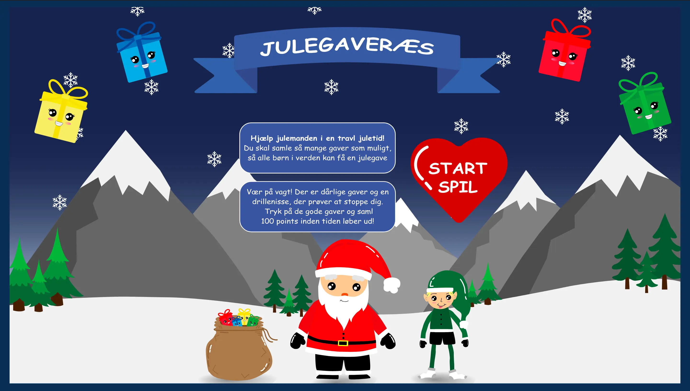

Portfolio
Tema 4 - grundlæggende animation
Tema beskrivelse
Vi har arbejdet med Javascript sammen med css animationer for at skabe et animeret spil. For at rentegne grafikken har vi brugt Adobe Illustrator.
Julegaveræs
04.04.01 Temaopgave
For at løse opgaven har jeg designet og kodet et animeret spil, som
går ud på, at brugeren inden for en tidsramme skal klikke på gode
elementer og undgå dårlige elementer. De gode elementer giver
pluspoint, og de dårlige elementer giver enten minuspoint, eller man
mister liv.
Hele min design proces kan findes på sitet under menupunktet “Grafik” og “Teknik”.
Link til spil:
